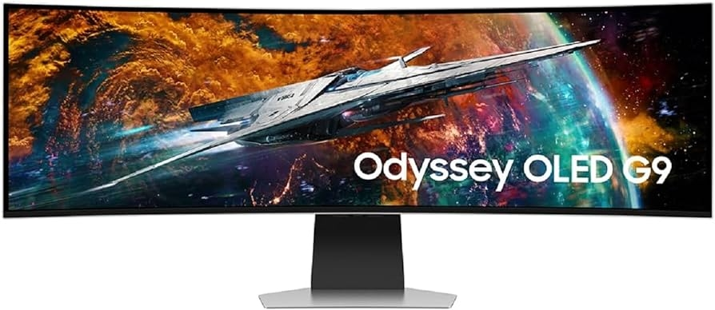
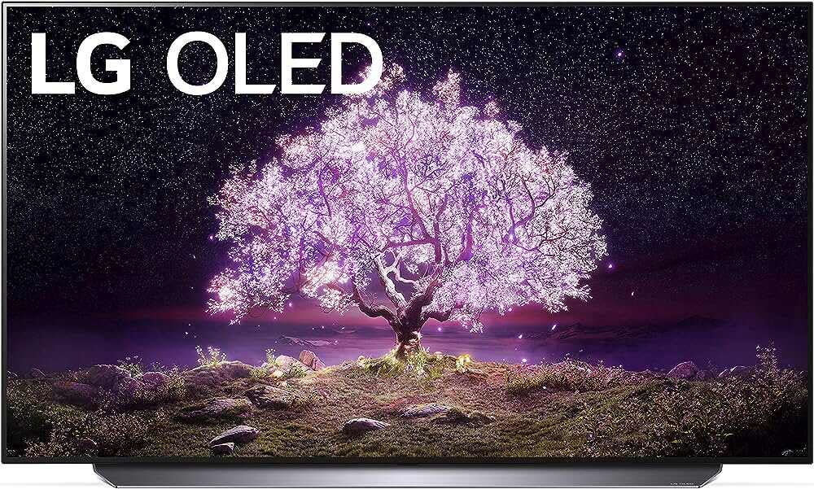

Comparison
Here are some comparisons between G9 OLED and other popular brands’ ultra-wide monitors.
SAMSUNG Odyssey G9 OLED
LG 48 C1 OLED

Overall Comparison
The SAMSUNG Odyssey G9 OLED and LG 48 C1 OLED have different type of display. The Samsung is a super ultrawide LED monitor with a 32:9 aspect ratio, and the LG is a more traditional 16:9 aspect ratio.
The LG has an OLED panel with near-infinite contrast ratio and perfect black uniformity; the Samsung's QLED panel gets significantly brighter. Even if both have HDMI 2.1 inputs, but the Samsung has a much higher 240Hz refresh rate compared to the LG's 120Hz.
Detailed Comparison
Compare the top two leading monitors on the market and discover why you should chose the Samsung Odyssey G9 OLED! Its style, specification and everything will exceed your expectation!
Style
The SAMSUNG Odyssey G9 OLED is a large curved monitor with black borders. The stand is also black which is plastic with a bit of chrome trim around.
The LG C1 48 comes with a metal center stand. The stand raises the screen off the table a bit.
Ergonomics
Ergonomics is extremely important for gamers since it gives a user to adjust a monitor.
Considered its size, Samsung has relatively good ergonomics: you can adjust the height and tilt.
LG does not offer ergonomic adjustments.
Picture Quality
The Samsung Odyssey G9 OLED has a great contrast ratio. The native contrast is very good and the local dimming feature provides good contrast. In the dark, it displays true blacks which is the best contrast with local dimming.
The LG C1 48 does not to good job in the dark; blacks look deep and inky and blurry.
HDR Brightness
HDR Brightness means the maximum brightness of a monitor can get. For better gaming condition, HDR is one of important factors you should consider.
The Samsung Odyssey G9 OLED has excellent HDR peak brightness and it offers a realistic cinematic HDR experience. Your gaming moment will become more realistic and vivid.
The LG C1 48 has good HDR peak brightness, however, with larger areas of bright, it gets dimmer. Also there is some loss of fine details in bright screen caused by sharp cut-off at the peak brightness.
Product Reviews
“The OLED is the new King of the PC Country”
Michael's Family
I have recently purchased both the 49 inch mini-LED and the OLED and have no regrets. You must be patient with the set-up on the newer OLED version and you will get through it. Does help if you already have a Samsung account on your phone. just take picture of the QR codes it will display and you will breeze through, easier. The mini-LED version sets-up like a regular PC monitor, but the OLED does something new to most of us. Picture quality is stunning on both monitors. It may be that the mini-LED version may be a bit bettor for office work? The mini-LED version has a more pronounced curve so I think I will give it to my son since he is mainly a game player, with a PC than I am. Either one and you will be pretty happy. The OLED is the new King of the PC Country, though.
“Looking for the best overall experience? This is the monitor!”
Amber
I watched all the reviews for this I could get my hands on. I read and watched 10 plus hours of monitor reviews. Ultimately it came down to this. I wanted the best quality viewing experience while gaming. I didn't care about how much it cost. I'm playing primarily Diablo 4, World of Warcraft, League of Legends and Valorant. The games look absolutely phenomenal in HDR max settings. Well I agree with many of the other stated minor issues, none of them are big enough for me to subtract a star. This is far and away above and beyond my expectations. I don't think I could ever go back to standard 1080p gaming. If you have the money and you're looking for the best overall experience, this is the monitor!
"It won't disappoint."
kyrusri
Hey, I wanted to share my experience with the Odyssey OLED G9 monitor. First off, this thing is a beast when it comes to specs. Picture a 49-inch curved display with an astonishing 5120 x 1440 resolution. Whether I'm gaming or working, this monitor delivers. If you're a Macbook M1 user like me, here's a tip: use the DisplayPort to USB connection to get that full 5120 x 1440 resolution. It's totally worth it. And don't forget to use Variable Refresh Rate to keep text looking crystal clear; — there is a difference, no annoying pixelation here. Now, for PC gaming, the HDMI 2.1 support with 12-bit color depth is a game-changer. I found that using HDMI is the way to go. Just make sure you've got the right cables handy. Once everything's set up correctly, the clarity is just amazing. Text is super sharp, and the colors are vibrant. Whether I'm in the middle of an intense gaming session or working on projects, the Odyssey OLED G9 impresses. In my experience, this monitor strikes a perfect balance between gaming and productivity. It's not just a screen; it's an immersive experience. If you're in the market for a versatile monitor, give the Odyssey OLED G9 a serious look. It won't disappoint.